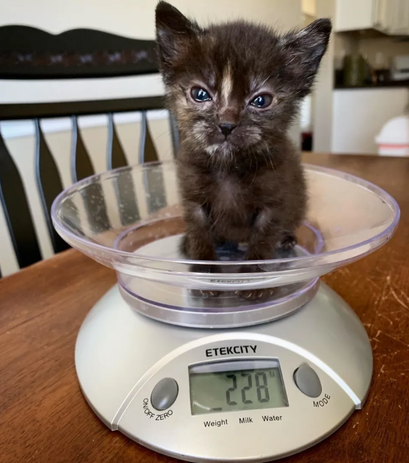
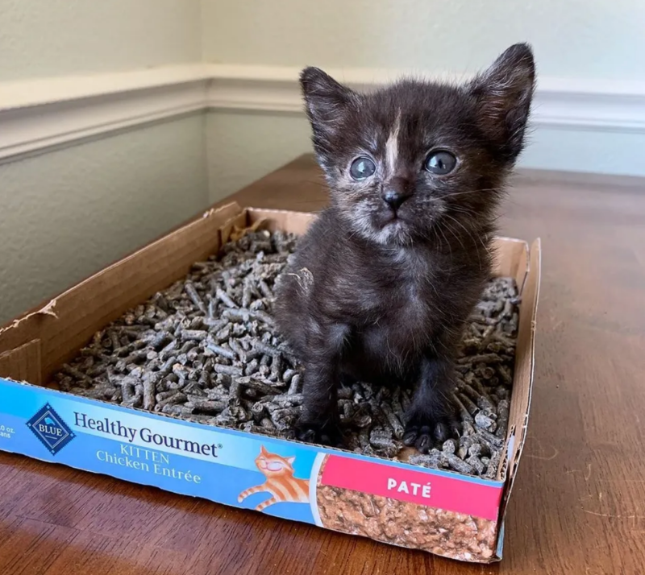

3개월 전, 미국 라스베가스에서 길고양이 중성화(TNR) 봉사활동에 참여하던 니키 씨는 작은 아기 고양이와 마주쳤습니다.
우거진 수풀 아래에서 작은 털 뭉치가 심술궂은 표정으로 그를 올려다보고 있었습니다. 오늘 소개해드릴 주인공 에리카입니다!
에리카는 인형 같은 표정으로 꼼짝하지 않고 쳐다보기만 하였고, 니키 씨가 녀석을 들어 품에 안자 그제야 큰소리로 "묘오" 하고 울었습니다
그런데 에리카의 건강상태는 생각보다 좋지 않았습니다. 밥을 주어도 먹지 않았고, 잘 움직이지도 않았습니다.
